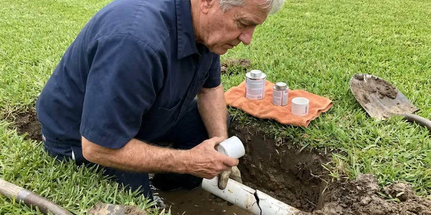

Gas Line Repair in East Hartford, CT
For reliable gas line repair in East Hartford, CT, GLV Plumbing is your trusted local expert. We handle all types of gas line issues safely and efficiently.
- Fast, Local Response
- Prompt, Certified Gas Service
- Code Compliant
- Licensed & Insured Plumbers
Safe & Reliable Gas Line Repair Services in East Hartford, CT.
Don't compromise on safety, contact GLV Plumbing for prompt assistance with any gas line concerns.
Licensed Gas Line Repair and Leak Detection in East Hartford, CT
GLV Plumbing repairs natural gas and propane lines feeding water heaters, furnaces, ranges, dryers, fireplaces, pool heaters and outdoor kitchens. We use electronic gas detectors and soap testing to locate leaks, then replace the damaged section with coated steel, CSST or polyethylene pipe as code allows.
Our expertise includes:
- Repair and replacement of natural gas and propane lines.
- Detecting and repairing gas leaks.
- Electronic leak detection on meters, risers, yard lines and appliances

Additional Plumbing Maintenance Services in East Hartford, CT
Our maintenance and specialty plumbing services in East Hartford, CT catch small problems before they become emergencies.


Customers
Why Choose GLV Plumbing for Gas Line Repair in East Hartford, CT?
At GLV Plumbing, we understand the serious nature of gas line repairs and put your safety above all else. Our team is trained in the latest safety protocols and uses modern equipment to make sure every job is completed correctly.
- Leak Pinpointing, We use electronic detectors and pressure gauges to find the precise leak location.
- Certified Technicians, Our plumbers are highly trained and licensed to work on all types of gas piping systems.
- Utility Ready, We coordinate inspections so your gas utility can restore service quickly.
Citywide Coverage
We repair gas lines in every neighborhood of East Hartford, from older homes with buried steel yard lines to newer builds with CSST in the attic. Our trucks carry pipe, fittings and test gauges for most jobs.
Experienced Team
The plumbers at GLV Plumbing are not just skilled, they are gas safety experts. Their extensive background in gas line diagnostics and repair means your home's gas system is in the most capable hands.
Safety-First Approach
We pull permits for gas work where required and pressure test repairs at the code-required pressure and duration. CSST systems get bonding checks to reduce lightning damage risk.
Trusted Certified East Hartford Plumbing Services Professionals
At GLV Plumbing, we take pride in providing certified plumbing services throughout East Hartford, CT. Backed by leading industry credentials, our experienced plumbers combine technical skill with genuine customer care. Whether it is repair, installation, or maintenance, we follow strict safety and quality standards to deliver lasting results you can trust.
Call Us Now PHCC Plumbing Contractor Recognition
PHCC Plumbing Contractor Recognition Better Business Bureau (BBB) Accreditation
Better Business Bureau (BBB) Accreditation Angi Certified Pro
Angi Certified Pro ISO 9001 Quality Management Certification
ISO 9001 Quality Management CertificationCode-Compliant Gas Line Repair Services in East Hartford, CT
Buried Yard Line Repair and Replacement in East Hartford, CT
Many older homes have steel gas lines running from the meter to the house or to a pool heater. Over time the wrap fails and the pipe corrodes, especially where sprinklers keep the soil wet. We call 811 to mark utilities before digging, then replace the line with polyethylene pipe and tracer wire or coated steel as required. Trenching is backfilled and the yard is cleaned up when we are done.

Residential Gas Line Upgrades & Relocations in East Hartford
Home renovations or new appliance installations sometimes require upgrading or relocating existing gas lines. If you're adding a gas fireplace, converting from electric to gas, or moving a laundry room, we can safely extend or reroute your gas piping. Our team assesses your current system and designs a solution that provides adequate gas flow while following all safety standards. Trust us for smooth gas line modifications in East Hartford.
Permitting & Code Compliance for Gas Work in East Hartford, CT
Gas line repairs and installations often require permits and must adhere to strict local and state plumbing codes in East Hartford, CT. GLV Plumbing handles all necessary permitting and ensures every aspect of our gas line work meets or exceeds these regulations. This includes proper pipe sizing, venting, pressure testing, and material specifications. We protect you from potential fines and make sure your system passes all required inspections, confirming safety and legality.
Corroded & Damaged Gas Pipe Replacement in East Hartford
Over time, ground movement and moisture can cause underground gas lines to corrode or become damaged, along with tree roots and age. Most homes here have full basements, so sump pumps, floor drains, and foundation seepage are frequent plumbing concerns. We specialize in replacing compromised sections of gas piping, using durable materials like polyethylene (PE) for underground lines or black iron pipe for exposed sections, all installed to current code. Our repairs prevent future leaks and ensure the long-term reliability of your gas supply in East Hartford.
Interior Black Iron Pipe Repair in East Hartford
Threaded black iron pipe can leak at joints after years of vibration or settling. We tighten, reseal or replace fittings and sections with new pipe and approved thread sealant. Rusted pipe in garages or exterior walls is replaced before it becomes a hazard. We pressure test the system after each repair.
Emergency Gas Line Shut-Off & Repair in East Hartford
A suspected gas leak is an emergency that demands prompt attention. If you smell gas, evacuate immediately and then call 911 and your gas provider to shut off the main supply. Once the area is safe, GLV Plumbing can dispatch a team for emergency gas line repair in East Hartford. We prioritize these urgent calls, working quickly to locate the leak, make the necessary repairs, and ensure your system is safe for restoration of gas service, coordinating with the utility as needed.
Natural Gas Leak Detection & Repair in East Hartford
Detecting a natural gas leak requires specialized equipment and expertise. Our technicians use sensitive leak detectors, like combustible gas sniffers, to pinpoint the exact location of a leak, whether it's from a faulty fitting, a corroded pipe, or a damaged appliance connector. Once located, we'll carefully shut off the supply, repair or replace the damaged section of pipe, and carefully test the system to ensure there are no further leaks. This precise approach minimizes disruption and maximizes safety for your East Hartford home.

Pool Heater, Fire Pit and BBQ Lines in East Hartford, CT
Outdoor living is a big part of many homes, and many backyards have gas lines for pool heaters, fire pits and built-in grills. These lines face sun, weather and irrigation water that shorten their life. We repair or replace outdoor gas lines and check that they are sized for the appliance load. Proper sizing keeps pool heaters from starving other appliances.
Gas Leak Repair Near Me in East Hartford, CT
When you search for 'gas line repair near me' in East Hartford, CT, GLV Plumbing is your local, dependable choice. We pride ourselves on quick response times and expert service, understanding that gas line issues require immediate attention. Our technicians are familiar with the specific challenges of plumbing in the East Hartford area.
If you need gas line repair near me quickly, GLV Plumbing has licensed plumbers working in East Hartford every day. Our trucks are stocked with detectors, pipe and fittings. Most leaks are found and fixed in a single service visit.
GLV Plumbing at a Glance
- Licensed and insured plumbers serving East Hartford, CT
- Same-day appointments and 24/7 emergency response
- Upfront, flat-rate pricing before work begins
- 4.8-star rated by 946+ Connecticut customers
East Hartford Map
East Hartford Information
- Population
- 51,045
- Area codes
- Local
- Service area
- East Hartford and communities within 40 miles
- Nearby
- Hartford, West Hartford, New Britain, Middletown
Proper gas line installation and maintenance in East Hartford, CT are crucial to prevent corrosion and stress fractures that can lead to dangerous leaks. Seasonal swings from freezing winters to muggy summers expand and contract pipes, which can loosen aging joints over the years.
Expert Services
Trust our professionals for reliable GLV Plumbing solutions in East Hartford, CT.
Our Specialized Plumbing Services in East Hartford, CT
At GLV Plumbing, we provide a complete range of plumbing services across East Hartford, CT. From leak detection to full system installations, our team ensures fast, precise, and affordable service for both residential and commercial properties. Explore our core services below:


How Our Gas Line Repair Process Works in East Hartford, CT
Our gas line repair process in East Hartford, CT is designed for efficiency, safety, and transparency. We keep you informed every step of the way, from initial contact to the final safety check.
Request a Quote
Contact GLV Plumbing by calling (860) 487-7330 to schedule an inspection. Our friendly team will gather initial information about your gas line concerns and set up an appointment at your convenience.
Thorough Inspection
A certified technician will arrive at your East Hartford property to conduct a detailed inspection using specialized leak detection equipment. We will pinpoint the exact source and extent of the gas line issue.
Safe & Precise Repair
Based on our findings, we'll present a clear, upfront estimate for the necessary repairs. Once approved, our team will safely complete the repair, replacing damaged sections and making sure all connections are secure and code-compliant.
Frequently Asked Questions About Gas Line Repair in East Hartford
The cost for gas line repair in East Hartford, CT can range from approximately $250 for minor fixes to $5,000 or more for extensive replacements or repairs requiring excavation. Factors like the leak's location, accessibility, and the type of piping influence the final price. We provide clear, upfront estimates after a thorough assessment.
No. Gas line repair is extremely dangerous and should only be performed by licensed and certified professionals. Incorrect repairs can lead to serious gas leaks, explosions, fires, and carbon monoxide poisoning. Always call a professional like GLV Plumbing.
Our certified technicians are experienced in working with various types of gas lines, including black iron pipe, flexible corrugated stainless steel tubing (CSST) like Gastite and TracPipe, and polyethylene (PE) pipe for underground applications. We make sure the correct material is used for each specific application according to code.
We use black iron, coated steel, CSST such as TracPipe and Gastite, and polyethylene for buried lines. The right choice depends on where the pipe runs and code.
Simple repairs take an hour or two. Buried yard line replacements often take a full day, plus inspection time if a permit is needed.
Yes, many significant gas line repairs and all new gas line installations in East Hartford typically require a permit from local building authorities. This confirms the work meets safety codes. GLV Plumbing will advise you on permit requirements and can help arrange the necessary inspections.
No, gas line repairs should never be attempted by an untrained individual. Working with gas lines is very dangerous due to the risk of explosions, fires, and carbon monoxide poisoning. Always hire a licensed and qualified professional like GLV Plumbing for any gas line work.
CSST is approved and widely used when installed and bonded correctly. We verify bonding and repair damaged sections with manufacturer-approved parts.
What People Are Saying About Our Plumbing Experts?

Daniel K.
A pipe burst at 11 pm and they actually answered. The plumber showed up within the hour, shut everything down, and had us back to normal the next morning. Could not ask for more.
Emergency Plumbing · Bristol, CT
Laura S.
I scheduled a water heater replacement, and the team made the process smooth and affordable. The new unit works perfectly, and they cleaned up after completing the job.
Water Heater Replacement · New Britain, CT
Mark T.
When our office needed drain cleaning, GLV Plumbing provided quick, reliable service. The plumber arrived on time and made sure every drain flowed perfectly before leaving. Very satisfied.
Drain Cleaning · Bristol, CT
Emily R.
I called GLV Plumbing for plumbing repair, and the technician was fast, polite, and thorough. They explained the problem clearly and fixed it the same day. I will definitely hire them again. Highly recommended!
Plumbing Repair · East Hartford, CTSofia M.
Two new toilets installed in one visit, no mess left behind, and the tech even adjusted a faucet he noticed was dripping. Fair pricing and really friendly.
Toilet Installation · Bristol, CT
James P.
Our commercial plumbing system had a leak under the sink, and GLV Plumbing handled it professionally. The plumbers arrived quickly and restored everything without disruption to our customers.
Commercial Plumbing · West Hartford, CT